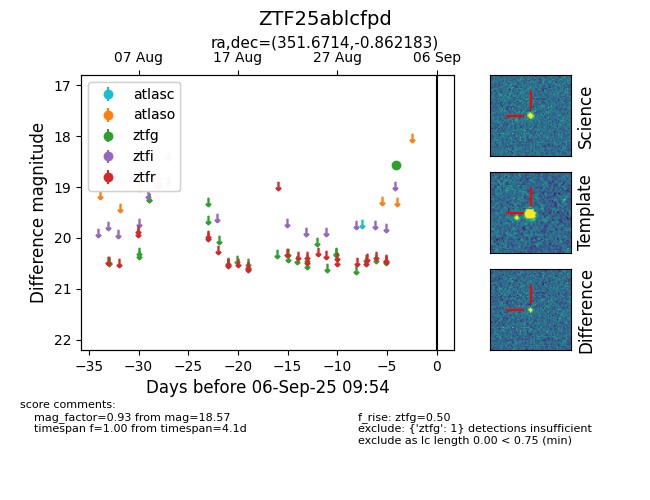

FINK: ZTF25ablcfpd
Lasair: ZTF25ablcfpd
ALeRCE: ZTF25ablcfpd
ZTF25ablcfpd (ztf,fink)
equatorial (ra, dec) = (351.6714,-0.86218)
galactic (l, b) = (81.6567,-56.78193)

last ztfg=18.57
1 ztfg detections